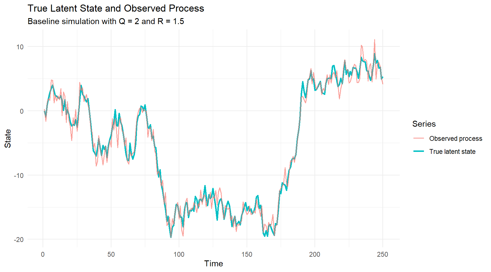
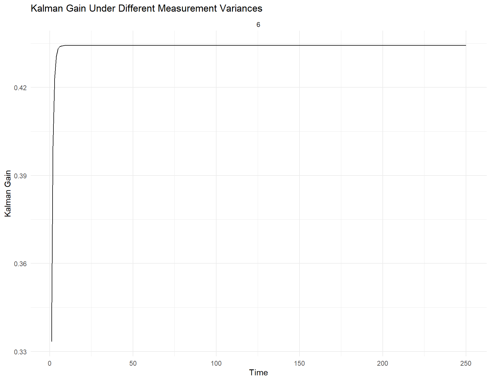
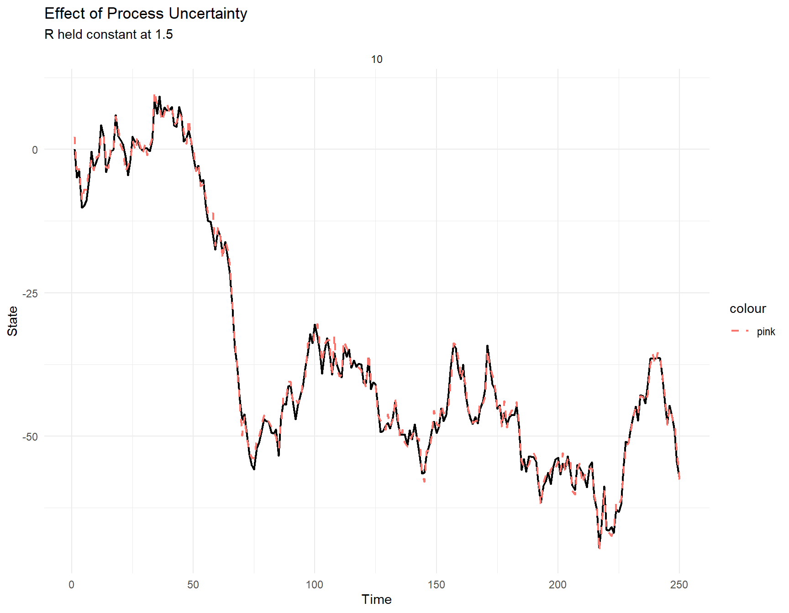

State Estimation Under Uncertainty: A Simulation Study of the Kalman Filter
Author
Natalie Chidikwindi
Introduction
State-space models are used to represent dynamic systems in which the true underlying process, or data-generating process (DGP), cannot be observed directly. Instead, the underlying process is represented by a latent state, while the available observations contain measurement noise. The objective is therefore to estimate the unobserved state using the noisy information that is available.
The Kalman filter is a recursive technique used for filtering, forecasting, and estimating latent states in linear Gaussian state-space models. It follows a Bayesian approach in which prior information about the state is combined with new observations to produce an updated estimate. At each time step, the Kalman filter first predicts the current state using the information available from the previous time step. Once a new observation becomes available, this prediction is updated according to the uncertainty associated with both the underlying process and the observed measurement. This produces a posterior estimate of the latent state.
For example, consider the simple local-level state-space model:
\[
x_t = x_{t-1} + w_t,
\]
where
\[
w_t \sim N(0,Q),
\]
and the observation equation
\[
y_t = x_t + v_t,
\]
where
\[
v_t \sim N(0,R).
\]
Here, \(x_t\) represents the true latent state at time \(t\), while \(y_t\) represents the observed measurement. The term \(w_t\) represents process noise, with variance \(Q\), while \(v_t\) represents measurement noise, with variance \(R\).
The model therefore contains two distinct sources of uncertainty. A large value of \(Q\) indicates greater uncertainty in the evolution of the underlying state, meaning that the true state may change substantially between consecutive time periods. In contrast, a large value of \(R\) indicates greater measurement uncertainty, meaning that the observed values may contain substantial noise and may therefore be less reliable representations of the true state.
The Kalman filter must account for these two sources of uncertainty when determining how much weight should be placed on the predicted state relative to the newly observed measurement. Understanding how the filter behaves under different levels and forms of uncertainty is therefore important when applying it to dynamic systems.
This honours project aims to answer the following research question:
How do different forms of uncertainty and disruption affect the ability of a Kalman filter to estimate an unobserved dynamic state?
Kalman filter algorithm
The Kalman filter is a recursive algorithm that follows a Bayesian approach by continuously updating the estimated state as new observations become available. A key component of the algorithm is the Kalman gain, which determines how much weight should be given to the new observation relative to the predicted state, based on their respective levels of uncertainty.
The first step of the Kalman filter is the prediction step. The current state is predicted using the estimated state from the previous time period. The uncertainty associated with this prediction is also calculated by incorporating the process uncertainty.
Once a new observation becomes available, the difference between the observed value and the predicted value is calculated. This difference is known as the innovation or prediction error, and it represents the new information provided by the observation.
The Kalman gain is then calculated using the uncertainty associated with the predicted state and the measurement uncertainty. The gain determines how much the predicted state should be adjusted in response to the new observation. When the observation is relatively reliable, greater weight is placed on the new information. In contrast, when measurement uncertainty is high, the filter places greater weight on the predicted state.
Finally, the predicted state is updated using the Kalman gain and the innovation to obtain the new estimate of the latent state. The uncertainty associated with the state estimate is also updated. This updated state and its uncertainty are then used as the starting point for the prediction at the next time period.
Baseline Simulation Using a Local-Level State-Space Model
The first step of the analysis was to create a baseline simulation using a simple local-level state-space model. The purpose of this simulation is to establish how the Kalman filter behaves under controlled conditions before introducing more complex scenarios involving different levels of uncertainty, model misspecification, structural changes, and missing observations.
A sample size of \(n=250\) observations was used. The process variance and measurement variance were initially set to
\(Q=2\)
and
\(R=1.5\).
The simulated data follow the local-level state-space model introduced previously. The state equation is
\[
x_t=x_{t-1}+w_t,
\]
where
\[
w_t\sim N(0,Q),
\]
and the observation equation is
\[
y_t=x_t+v_t,
\]
where
\[
v_t\sim N(0,R).
\]
Here, \(x_t\) represents the true latent state at time \(t\), while \(y_t\) represents the observed measurement. The process error \(w_t\) determines how the underlying latent state evolves between consecutive time periods, while the measurement error \(v_t\) introduces noise into the observed values.
Therefore, \(Q\) represents the process variance, while \(R\) represents the measurement variance. For the baseline simulation, \(Q=2\) allows the latent state to vary over time, while \(R=1.5\) introduces measurement uncertainty around the true state.
The relationship between the latent states, observations, and the two sources of uncertainty can be represented using the following directed acyclic graph (DAG):
The DAG illustrates that each latent state \(x_t\) depends on the previous state \(x_{t-1}\) and the process noise \(w_t\). Each observed value \(y_t\) then depends on the corresponding latent state \(x_t\) and measurement noise \(v_t\).
Since the data are simulated, the true latent state is known. This provides an important advantage for the simulation study because the state estimates produced by the Kalman filter can be directly compared with the true underlying process.
The simulated latent state and noisy observations are shown below.
Click to expand code
# data simulatedset.seed(432)# parametersn <-250Q <-2R <-1.5x0 <-0# inialize xt and yt yt <-numeric(n)xt <-numeric(n)xt[1] <- x0# loop for simulated latent variable for (i in2:n){ wt =rnorm(1, mean =0 , sd =sqrt(Q)) xt[i] = xt[i-1] + wt}# loop for observed statefor (i in1:n){ vt =rnorm(1, mean =0, sd =sqrt(R)) yt[i] = xt[i] + vt }
Click to expand code
plot_data <-tibble(Time =1:n,True_State = xt,Observed = yt)# Plots true latent state and observed measurementsggplot(plot_data, aes(x = Time)) +geom_line(aes(y = True_State, colour ="True latent state"),linewidth =1) +geom_line(aes(y = Observed, colour ="Observed process"),linewidth =0.7,alpha =0.7) +labs(title ="True Latent State and Observed Process",subtitle ="Baseline simulation with Q = 2 and R = 1.5",x ="Time",y ="State",colour ="Series" ) +theme_minimal()

The plot below shows the simulated true latent process and the corresponding observed state. The observed values generally follow the movement of the underlying latent process; however, they fluctuate around the true state due to the presence of measurement noise. As a result, the observations do not provide a perfect representation of the true latent state. This demonstrates the state-estimation problem that the Kalman filter aims to address by using the noisy observations to estimate the underlying process more accurately.
Kalman Filter Implementation from First Principles
Following the baseline simulation, the Kalman filter was implemented from first principles rather than relying initially on an existing filtering function. This was done to demonstrate the recursive calculations underlying the algorithm and to examine how information and uncertainty are propagated through the filtering process.
For the local-level model, an initial estimate of the state and its associated uncertainty must first be specified. The Kalman filter then proceeds recursively through prediction and update steps for each observation.
At time \(t\), the previous filtered state estimate is used to predict the current latent state:
\[
\hat{x}_{t|t-1}=\hat{x}_{t-1|t-1}.
\]
The uncertainty associated with this prediction is also updated by incorporating the process variance:
\[
P_{t|t-1}=P_{t-1|t-1}+Q.
\]
This reflects the fact that uncertainty increases as the underlying process evolves between consecutive time periods.
Innovation
Once the new observation \(y_t\) becomes available, the difference between the observed value and the predicted state is calculated:
\[
e_t=y_t-\hat{x}_{t|t-1}.
\]
This quantity is known as the innovation, or prediction error, and represents the new information provided by the observation.
The variance of the innovation is:
\[
S_t=P_{t|t-1}+R.
\]
It incorporates uncertainty from both the predicted state and the measurement process.
Kalman Gain
The Kalman gain determines how strongly the predicted state should be adjusted in response to the new observation:
\[
K_t=
\frac{P_{t|t-1}}
{P_{t|t-1}+R}.
\]
The Kalman gain therefore depends on the relative uncertainty associated with the predicted state and the observed measurement. When measurement uncertainty \(R\) is large, less weight is placed on the observation. In contrast, when the predicted state is relatively uncertain compared with the measurement, greater weight is placed on the new observation.
State Update
The predicted state is then corrected using the innovation and the Kalman gain:
\[
\hat{x}_{t|t} = \hat{x}_{t|t-1}
+
K_te_t.
\]
The updated estimate therefore combines information from the model prediction with information contained in the new observation.
Uncertainty Update
Finally, the uncertainty associated with the filtered state is updated:
\[
P_{t|t} = (1-K_t)P_{t|t-1}.
\]
The updated state estimate \(\hat{x}_{t|t}\) and its uncertainty \(P_{t|t}\) then become the inputs for the prediction step at time \(t+1\). This recursive process is repeated for all 250 observations.
Click to expand code
kalman_filt <-function(y, Q, R, m0, P0){# initialize vectors N <-length(y) at <-numeric(N) Rt <-numeric(N) Qt <-numeric(N) mt <-numeric(N) Pt <-numeric(N) et <-numeric(N) Kt <-numeric(N)# loop for filterfor(i in1:N){# predictionif(i ==1){ at[i] <- m0 Rt[i] <- P0 + Q } else { at[i] <- mt[i-1] Rt[i] <- Pt[i-1] + Q }# innovation et[i] <- y[i] - at[i] Qt[i] <- Rt[i] + R# Kalman gain Kt[i] <- Rt[i] / Qt[i]# update states mt[i] <- at[i] + Kt[i] * et[i] Pt[i] <- (1- Kt[i]) * Rt[i] }return(data.frame(Time =1:N,Observation = y,Predicted_State = at,Prediction_Variance = Rt,Innovation = et,Innovation_Variance = Qt,Kalman_Gain = Kt,Filtered_State = mt,Filtered_Variance = Pt ))}# implement from the function kf_res <-kalman_filt(y = yt, Q = Q, R = R, m0 =0, P0 =1)
Validation Against the dlm Package
To validate the implementation, the manually calculated filtered state estimates were compared with estimates obtained using the dlm package. The same process variance, measurement variance, initial state estimate, and initial state uncertainty were specified to ensure that the two implementations were comparable.
The estimates were also compared numerically by calculating the difference between the manually implemented filtered states and those produced by the dlm package.
The maximum absolute difference between the two sets of filtered state estimates was extremely small and close to zero. This indicates that the Kalman filter implemented from first principles is numerically consistent with the dlm implementation under the same state-space model specification and initialization. This validation provides confidence that the recursive calculations in the manually implemented filter have been correctly specified.
Baseline Benchmarks for the Scenarios
Now that the Kalman filter has been shown to work well, benchmark values will be used to determine how the different scenarios affect its performance. A five-period moving average is used as the benchmark model to determine whether it is better to explicitly model uncertainty or simply smooth out the noise in the observed data.
The main metric used for comparison is the root mean squared error (RMSE):
The plot shows that the Kalman filter follows the true state more closely than the moving average in the baseline simulation.
The RMSE is calculated for each method and will be used as a baseline for the scenarios that follow.
Click to expand code
# function of rmseRMSE <-function(actual, estimate){sqrt(mean((actual - estimate)^2, na.rm =TRUE))}#table of resultsbenchmark_results <-data.frame(Method =c("Raw observations","Moving average","Kalman filter"),RMSE =c(RMSE(xt, yt),RMSE(xt, ma_est),RMSE(xt, kf_res$Filtered_State) ))benchmark_results |> knitr::kable(, digits =3, caption ="Table of benchamark results of the RMSE for themoving average, kalman filter")
Table of benchamark results of the RMSE for themoving average, kalman filter
Method
RMSE
Raw observations
1.141
Moving average
1.597
Kalman filter
0.965
The RMSE results support what can be seen visually from the plot. These values will therefore be used as a baseline when looking at the different scenarios. This comparison is useful because the moving average simply smooths the observations, while the Kalman filter adjusts its estimates based on uncertainty in both the process and the measurements.
Scenario Analysis
The scenarios are used to see how different changes affect the Kalman filter estimates, Kalman gain, uncertainty and overall performance.
The scenarios look at measurement and process uncertainty, different combinations of these uncertainties, misspecified uncertainty, structural changes and missing observations.
Scenario 1: Measurement and Process Uncertainty
Measurement and process uncertainty both affect how the Kalman filter smooths the observations and updates its estimates. This scenario focuses on answering two questions:
How does measurement uncertainty affect state estimation?
How does uncertainty in the underlying process affect the responsiveness of the Kalman filter?
Both measurement and process uncertainties have a large effect of the values and ow the smooting works however the actual estiamtes is another story. This scanrio will focus on answering these 2 queations: 1. How does measurement uncertainty affect state estimation? 2. How does uncertainty in the underlying process affect the responsiveness of the Kalman filter?
Measurement Uncertainty
Measurement uncertainty was changed using three levels:
Low measurement uncertainty: (R=0.5)
Moderate measurement uncertainty: (R=1.5)
High measurement uncertainty: (R=6)
Process uncertainty \(Q\) is held constant at 2.
Click to expand code
R_vals <-c(low =0.5,meoderate =1.5,high =6)# function to create true state valuessimulate_state <-function(n, Q, R, x0 =0){ xt <-numeric(n) yt <-numeric(n) xt[1] <- x0for(i in2:n){ wt <-rnorm(1, mean =0, sd =sqrt(Q)) xt[i] <- xt[i -1] + wt }for(i in1:n){ vt <-rnorm(1, mean =0, sd =sqrt(R)) yt[i] <- xt[i] + vt }data.frame(Time =1:n,True_State = xt,Observation = yt )}
The three measurement uncertainty scenarios are then simulated and filtered.
ggplot(measurement_results, aes(x = Time)) +geom_line(aes(y = True_State),linewidth =0.8) +geom_line(aes(y = Filtered_State, colour ="blue"),linewidth =0.8,linetype ="dashed") +facet_wrap(~R) +labs(title ="Effect of Measurement Uncertainty",subtitle ="Q held constant at 2",x ="Time",y ="State" ) +theme_minimal()
Click to expand code
ggplot(measurement_results,aes(x = Time, y = Kalman_Gain)) +geom_line() +facet_wrap(~R) +labs(title ="Kalman Gain Under Different Measurement Variances",x ="Time",y ="Kalman Gain" ) +theme_minimal()

As measurement uncertainty increases, the observations become less reliable. The Kalman gain therefore decreases because the filter places less weight on the new observations and more weight on its predicted state.
This results in more smoothing as \(R\) increases. The estimation error can also become larger because the observations contain more noise and provide less accurate information about the true state. This shows how measurement uncertainty affects how much the Kalman filter trusts the observed values.
Process Uncertainty
Process uncertainty was changed using low, moderate and high values:
Low: (Q=0.2)
Moderate: (Q=2)
High: (Q=10)
Measurement uncertainty is held constant at (R=1.5).
Performance under different levels of process uncertainty
Q
RMSE
MAE
Mean_Kalman_Gain
10
1.133
0.918
0.883
Click to expand code
ggplot(process_results, aes(x = Time)) +geom_line(aes(y = True_State),linewidth =0.8) +geom_line(aes(y = Filtered_State, colour ="pink"),linewidth =0.8,linetype ="dashed") +facet_wrap(~Q, scales ="free_y") +labs(title ="Effect of Process Uncertainty",subtitle ="R held constant at 1.5",x ="Time",y ="State" ) +theme_minimal()

The Kalman gain increases as \(Q\) increases. This makes sense because a larger \(Q\) means that there is more uncertainty about how the true state changes over time. The filter becomes less confident in its previous prediction and therefore places more weight on the new observation.
This shows the trade-off between smoothing and responsiveness. When \(Q\) is low, the filter assumes that the true state does not change too much between periods, so the estimates are smoother. When \(Q\) is high, the filter allows the state to change more and becomes more responsive to new observations.
The RMSE also increases in some of the higher-\(Q\) scenarios. However, increasing \(Q\) also makes the simulated true state more volatile, meaning that the state itself becomes more difficult to estimate.
Scenario 2: Joint Uncertainty
Different combinations of low, moderate and high values of \(Q\) and \(R\) are used to see how the Kalman filter performs under different uncertainty conditions.
The results show that the performance of the Kalman filter depends on both measurement and process uncertainty. Higher measurement uncertainty generally leads to larger errors because the observations contain more noise. Higher process uncertainty also makes the underlying state more variable and more difficult to estimate.
The combinations show that it is not only the individual values of \(Q\) and \(R\) that matter, but also their values relative to each other. When measurement uncertainty is high, the filter relies more on its predicted state and produces more smoothing. When process uncertainty is high, the filter becomes more responsive and places more weight on the observations.
The results from one simulation can also be affected by random variation. A Monte Carlo study is therefore used to make a more reliable comparison.
Scenario 3: Monte Carlo Study
The individual scenarios are based on randomly generated data, meaning that the results from one simulation may not represent what normally happens under the same values of \(Q\) and \(R\).
A function is created to repeat the simulation and compare the Kalman filter with the moving average.
Click to expand code
run_replication <-function(n, Q, R, ma_window =5){ sim <-simulate_state(n = n,Q = Q,R = R ) kf <-kalman_filt(y = sim$Observation,Q = Q,R = R,m0 =0,P0 =1 ) ma <-slide_dbl( sim$Observation, mean,.before = ma_window -1,.complete =TRUE )# Same evaluation period for both methods valid <-!is.na(ma)data.frame(KF_RMSE =RMSE( sim$True_State[valid], kf$Filtered_State[valid] ),MA_RMSE =RMSE( sim$True_State[valid], ma[valid] ) )}
A total of 500 simulations are run for every combination of \(Q\) and \(R\).
The results are summarised using the average RMSE, standard deviation and the percentage of simulations where the Kalman filter performs better than the moving average.
The results show that the average RMSE changes across the different uncertainty combinations. Scenarios with higher levels of uncertainty generally have larger estimation errors because there is more noise in the observations, more variation in the underlying state, or both.
The standard deviation of the RMSE also tends to become larger in scenarios with greater uncertainty, showing that estimation performance becomes more variable as the problem becomes more difficult.
The percentage of simulations where the Kalman filter has a lower RMSE than the moving average gives a clearer comparison between the two methods. This shows how consistently the Kalman filter performs better rather than relying on only one simulated dataset.
The Monte Carlo results therefore provide a more reliable view of Kalman filter performance under the different uncertainty conditions.
Scenario 4: Misspecified Uncertainty
The previous scenarios assume that the Kalman filter knows the correct values of \(Q\) and \(R\). In reality, these values may not always be known correctly. This scenario looks at what happens when the uncertainty assumed by the Kalman filter is different from the true uncertainty used to generate the data.
Misspecified Measurement Uncertainty
The true measurement uncertainty is set to (R=10), while the filter is given assumed values of 1, 10 and 50.
When the assumed value of \(R\) is lower than the true value, the filter believes that the observations are more reliable than they actually are. This leads to a larger Kalman gain and causes the filter to place too much weight on noisy observations.
When the assumed value of \(R\) is higher than the true value, the Kalman gain becomes smaller. The filter believes that the observations are less reliable and therefore places more weight on its predicted state, resulting in more smoothing.
The results show that incorrectly specifying measurement uncertainty affects both the Kalman gain and the accuracy of the estimates.
Misspecified Process Uncertainty
Process uncertainty is also misspecified to see how this changes the filter.
The Kalman gain increases as the assumed value of \(Q\) increases. A larger assumed \(Q\) tells the filter that there is more uncertainty in the movement of the underlying state, so it becomes more responsive to new observations.
When \(Q\) is underestimated, the filter assumes that the true state is more stable than it actually is. This can result in too much smoothing and make the filter slower to respond to changes.
When \(Q\) is overestimated, the filter assumes that the state changes more than it actually does. It therefore places more weight on new observations and may become too responsive to noise.
This shows that the Kalman filter depends on having reasonable estimates of both process and measurement uncertainty.
Scenario 5: Structural Change
A structural change is introduced at (t=100), where the true state experiences a permanent shift of 15 units.
The filter was able to adjust relatively quickly to the change. Under the values of \(Q\) and \(R\) used in this simulation, the recovery time was one observation.
This does not mean that the Kalman filter will always recover from a structural change within one observation. The recovery time depends on the size of the change, the values of \(Q\) and \(R\), and the definition used to determine when the filter has recovered.
The result does show the importance of the trade-off between smoothing and responsiveness. A filter that produces very smooth estimates may work well when the process is stable but may take longer to adjust when a real change occurs.
Scenario 6: Missing Observations
Missing observations are introduced at rates of 0%, 10%, 25% and 40% to see how they affect the Kalman filter.
The Kalman filter is changed slightly so that when an observation is missing, the prediction step is still completed but the measurement update is skipped.
Effect of missing observations on Kalman filter performance
Missing_Rate
RMSE
Mean_Uncertainty
0.00
0.965
1.000
0.10
1.022
1.227
0.25
1.250
1.669
0.40
1.180
2.318
The results show that having more missing observations leads to less accurate estimates, with RMSE generally increasing as the percentage of missing values increases. Mean uncertainty also becomes larger as more observations are removed.
The Kalman filter can still produce an estimate when an observation is missing because it can continue with the prediction step. However, without an observation, it cannot use the normal measurement update to correct the prediction. The uncertainty therefore increases until new observations become available.
This shows that the Kalman filter is able to handle missing observations, but the certainty of its estimates is affected when less information is available.
missing_summary |>
knitr::kable( digits = 3, caption = “Effect of missing observations on Kalman filter performance” )
The results show that having more missing observations leads to less accurate estimates, with RMSE generally increasing as the percentage of missing values increases. Mean uncertainty also becomes larger as more observations are removed.
The Kalman filter can still produce an estimate when an observation is missing because it can continue with the prediction step. However, without an observation, it cannot use the normal measurement update to correct the prediction. The uncertainty therefore increases until new observations become available.
This shows that the Kalman filter is able to handle missing observations, but the certainty of its estimates is affected when less information is available.
Uncertainty Intervals
The filtered variance is also used to construct 95% uncertainty intervals around the estimated state:
The empirical coverage is approximately 95%, meaning that around 95% of the true state values are contained within the estimated uncertainty intervals.
This is close to the expected coverage and shows that the filter is not only able to estimate the true state but can also provide information about the uncertainty around those estimates.
Conclusion
The results show that the Kalman filter is strongly affected by both process uncertainty \(Q\) and measurement uncertainty \(R\). These values determine how much the filter relies on its previous prediction compared with the new observation.
When measurement uncertainty increases, the Kalman gain decreases because the filter trusts the observations less, resulting in more smoothing. When process uncertainty increases, the Kalman gain increases because the filter becomes less certain about its previous prediction and responds more strongly to new observations.
The scenarios also show that correctly specifying uncertainty is important. Incorrect values of \(Q\) and \(R\) can cause the filter to either respond too strongly to noise or smooth the estimates too much.
The Kalman filter was also able to continue estimating the true state when observations were missing, although the uncertainty of the estimates increased. It was also able to respond relatively quickly to the structural change under the conditions used in the simulation.
Overall, the main benefit of the Kalman filter is that it does more than simply smooth noisy observations. It uses the uncertainty in both the process and the measurements to determine how much information should come from the prediction and how much should come from the new observation.
Limitations
The project focused on a basic local-level Kalman filter. It would have been useful to investigate more complex state-space models where the underlying process contains additional components such as trends or seasonality.
The analysis also assumes a linear model with normally distributed process and measurement errors. Real-world time-series data may not always follow these assumptions.
Another limitation is that \(Q\) and \(R\) were mainly treated as known values. In a real application, these uncertainty parameters would usually need to be estimated from the available data.
It would also have been interesting to explore the Kalman filter from a more Bayesian perspective and compare it with other filtering or smoothing techniques. This could provide a better understanding of when different approaches to state estimation are most useful.
Reflection
This project helped me understand how the Kalman filter works from first principles and how each part of the algorithm contributes to the final state estimate. Implementing the filter myself made it easier to understand the prediction, innovation, Kalman gain and update steps rather than only using an existing package.
I also learnt how changes in process and measurement uncertainty affect the Kalman gain and the amount of smoothing produced by the filter. The scenarios helped me understand the balance between producing smooth estimates and being responsive when the true state changes.
The Monte Carlo analysis also showed me why it is important not to rely on only one simulated time series when evaluating a model. Repeating the simulations gave a better understanding of how the filter performs under different uncertainty conditions.
Overall, this project improved my understanding of state-space models, uncertainty and how the Kalman filter can be used to estimate an underlying state when the available observations contain noise.